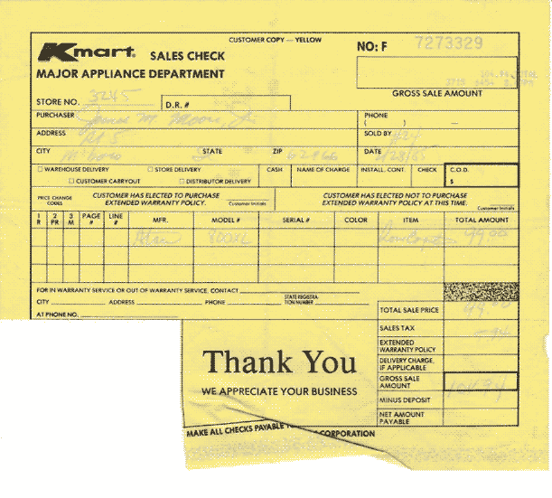

ONE MAN'S TRASH IS NOW MY LOVELY TREASURE
105.265_correspondence_1923.9.16_FH, By New Brunswick Free Public Library.
Goddard's Diary III. This is what Dr. Goddard wrote in his diary for March 16, 1926, which was the day he launched the first liquid-fueled rocket. *Image Credit*: NASA
K-Mart sales receipt for an Atari 800XL 8-bit home computer from 1985.
Wide Area Information Servers Project Documentation, Scanned and uploaded in 2013.
An apology (?) letter from Brian to Annie, Scanned Document.
A Post-it note from 1998.

Folder 2/3: Bills, receipts, promissory notes, etc. Fragments of bill/receipt (1760-1852?).
Library Receipt, customized by Albert Cortes.